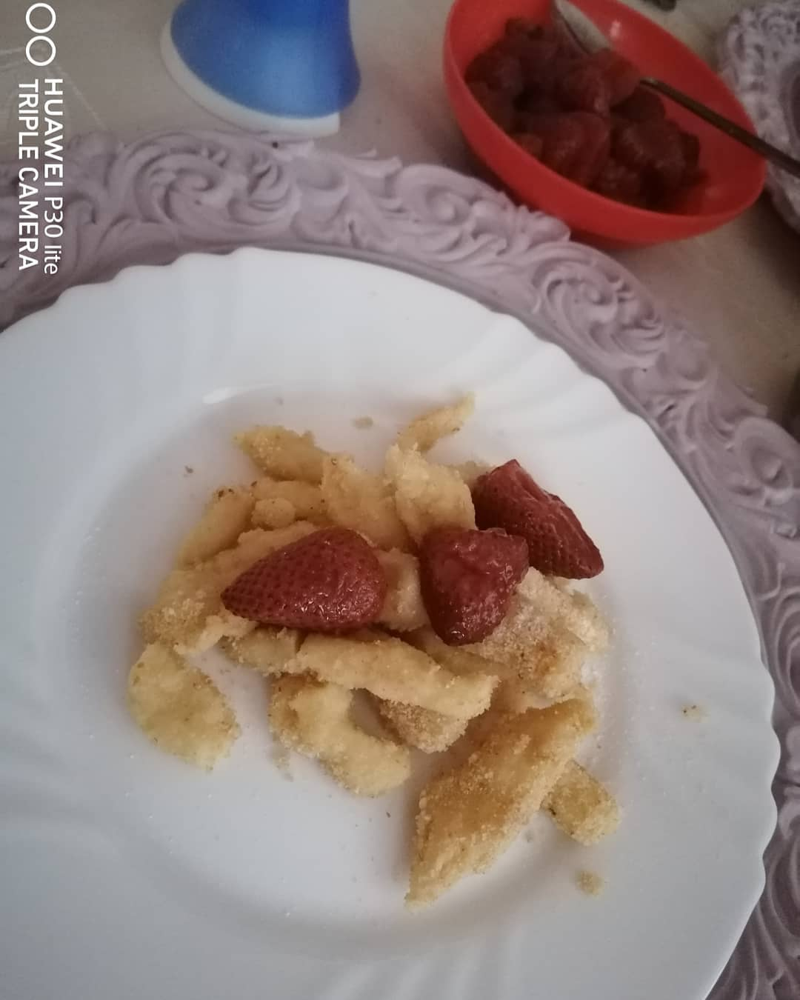

Zemiakové šúľance podľa @zatulana_v_knihach — Normy Jedál
Zemiakové šúľance s jahodami
500g zemiakov
Vajíčko
Štipka soli
200-250g polohrubej múky
Maslo
Strúhanka
Jahody
Cukor podľa chuti
Zemiaky si uvarte v šupke a nechajte vychladnúť. Ošúpte a nastrúhajte. Pridajte vajíčko, štipku soli a postupne pridávajte múku tak, aby vzniklo kompaktné cesto, ktoré sa nelepí. Cesto rozdeľte na menšie časti a vyšúľajte do dlhých tenkých valčekov. Tie nakrájajte na menšie valčeky a varte vo vriacej vode, až pokiaľ nevyplávajú. Podávajte s roztopeným maslom, strúhankou a jahodami.
#zemiakovesulancesjahodami #zemiakovesulance #sjahodami #mnam #dnesjem #dnesjim #jidlo #jedlo #mnamka #obed